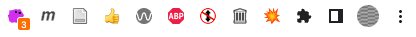

3-DOM
3-DOM
- Download and add project assets
- Add a browser action and icons
- Test the explosion script
👉 Get project assets
- Download the
assets.zipfile you'll need to continue the tutorial. - Unzip the folder and place it in your
explode-tutorialproject folder. - Your structure should look like this >
/explode-tutorial/
assets/
css/
img/
libs/
js/
pages/
sounds/
background.js
content.js
manifest.json
Browser action
- An action adds an extension icon and popup window to the browser toolbar.
- The action is sometimes called "browser action", or "popup script".
- The action popup is an HTML page you define and has its own context (and its own DevTools console!).

👉 Add an action
- Add a new file to the project folder called
action.html - Paste in this code.
<!DOCTYPE html>
<html>
<head>
<meta charset="UTF-8">
</head>
<body>
<div style="width:220px; text-align:center">
<p>💥 Explode Tracked Pages!</p>
<p>Press e + ~ to test</p>
</div>
</body>
</html>
👉 Add the action and icons to the manifest
The icon identifies the browser extension in the chrome://extensions page.
- Add this code to your manifest to add the icon and action.
- Refresh the extension.
"icons": {
"16": "assets/img/explosion-icon16.png",
"32": "assets/img/explosion-icon32.png",
"64": "assets/img/explosion-icon64.png",
"128": "assets/img/explosion-icon128.png"
},
"action": {
"default_icon": {
"16": "assets/img/explosion-icon16.png",
"32": "assets/img/explosion-icon32.png"
},
"default_title": "Explode Tracked Web Pages!",
"default_popup": "action.html"
},
👉 Add libraries to manifest
Let's go ahead and reference the libraries we need in our manifest.
- Edit the
content_scriptsection, and addweb_accessible_resourcesto the end. See documentation for details. - If you prefer to copy and paste you can get the full
manifest.jsonon Github.
"content_scripts": [{
"matches": ["<all_urls>"],
"js": [
"assets/libs/anime.min-3.2.0.js",
"assets/libs/purify-2.3.4.js",
"assets/js/disconnect-tracking-services.js",
"assets/js/functions.js",
"assets/js/keys.js",
"assets/js/explode.js",
"content.js"
],
"css": [
"assets/css/styles.css"
],
"run_at": "document_end",
"all_frames": false
}],
"web_accessible_resources": [{
"resources": ["*.svg", "*.mp3"],
"matches": ["<all_urls>"],
"use_dynamic_url": true
}]
👉 Test the explosion
- Refresh your extension and click the action icon to see the popup (you may need to click the puzzle piece see or pin it).
- If everything worked you'll see a line that says
Press e + ~ to test. - Before you test, know that you can reset the page by clicking reload.
Explode the Web!
I don't know about you but I enjoy this small function immensely.
Explode the Web!
The code that makes this work is just Javascript. I'll say two things about it:
- The animation is made possible thanks to Anime.js library. I highly recommend exploring the examples in the documentation.
- I wrote the code that explodes the page. It is open source, and is fairly simple: grabbing all the html elements on a page, and transforming their position, rotation, and scale using random numbers.
👉 The document object model
With our extension assets ready we can start to build the tracker-tracking function!
- Add this code to
content.js - Save the file and refresh the extension
- Open the test page in Chrome
assets/pages/test.htmland open the console.
console.log(`💥 The page title is ${document.title}`);
The document object model
- The code you added will let you see the title of any page in the console.
- This is possible because browsers load the text of web pages as nested elements, or "nodes".
- This "document object model" or DOM allows us to get (or set!) the attributes of any element via its path in the hierarchy.
👉 Change the DOM in the console
The console is interactive, so you can even test this on a live page.
- Paste this into the console
- Press return
- Try other color names
document.body.style.backgroundColor = "red";
👉 Get script elements using the DOM
- Add this code to
content.jsjust under theconsole.logfunction and before the closing});to store a reference to all the script elements on each page. - Refresh the extension, reload the test page, and you should see all script elements appear in the console as an
HTMLCollection.
var scriptsFoundArr = document.getElementsByTagName("script");
console.log(scriptsFoundArr);
Part 3 conclusion
- We made a lot of progress in this section, adding assets with icons and a test page, hooking up the explode test function, and using the DOM to get scripts.
- In the next section we'll look at these elements and check if they are connecting to tracker domains.
- 👉 Start the next section Create the Explosion